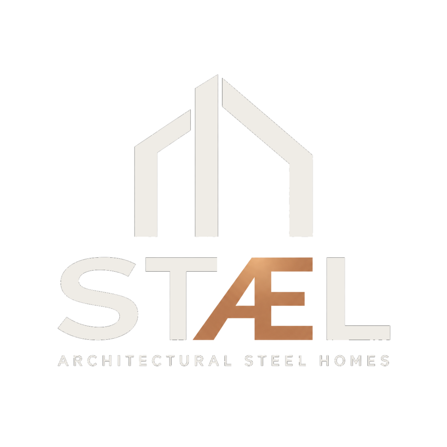
Woningen met een stalen hoofddraagconstructie. Grote overspanningen, veel glas, industriële elegantie. Ontworpen, geproduceerd en gemonteerd door bouwers.
STÆL is een samenwerking tussen EG Assembly en New Way. EG Assembly is een Westlands bouwbedrijf dat sinds 1992 staalconstructies en utiliteitsbouw realiseert. Die ervaring uit de industriebouw brengen we samen naar de woningmarkt: stalen frames die overspanningen mogelijk maken waar traditionele bouw stopt.
Geen doorverkochte aannemerij. Eén team van ontwerp tot montage, met eigen mensen op de bouwplaats.
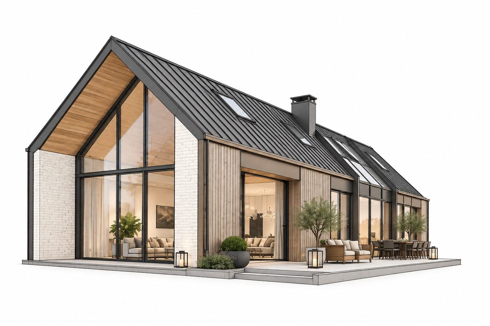
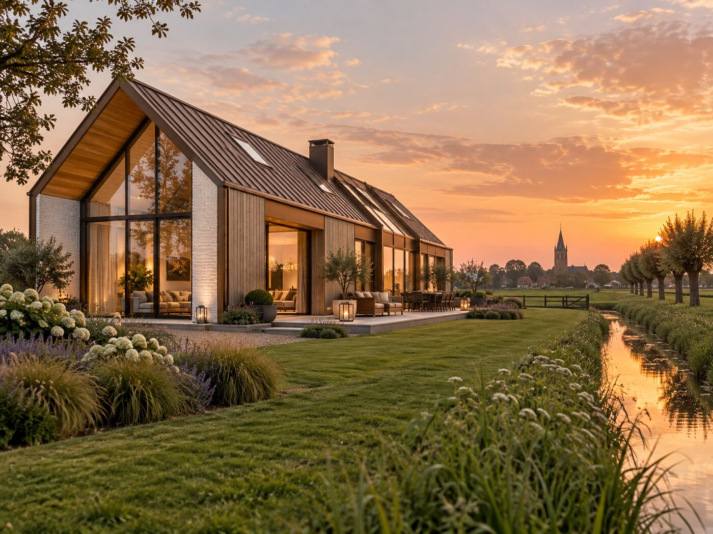
Staal ◆ Glas ◆ Licht ◆ Ruimte
Ontwerp je woning samen met ons, live. Vul je kavel en wensen in, kies uit vormvarianten, bepaal materiaal en kleur, en draai in 3D om je woning heen. Zet je opmerkingen direct óp het model; wij passen aan terwijl je meekijkt.
Van loftwoning tot paviljoen: het stalen frame bepaalt wat er kan, jij bepaalt hoe het voelt. Een beeld van de mogelijkheden.
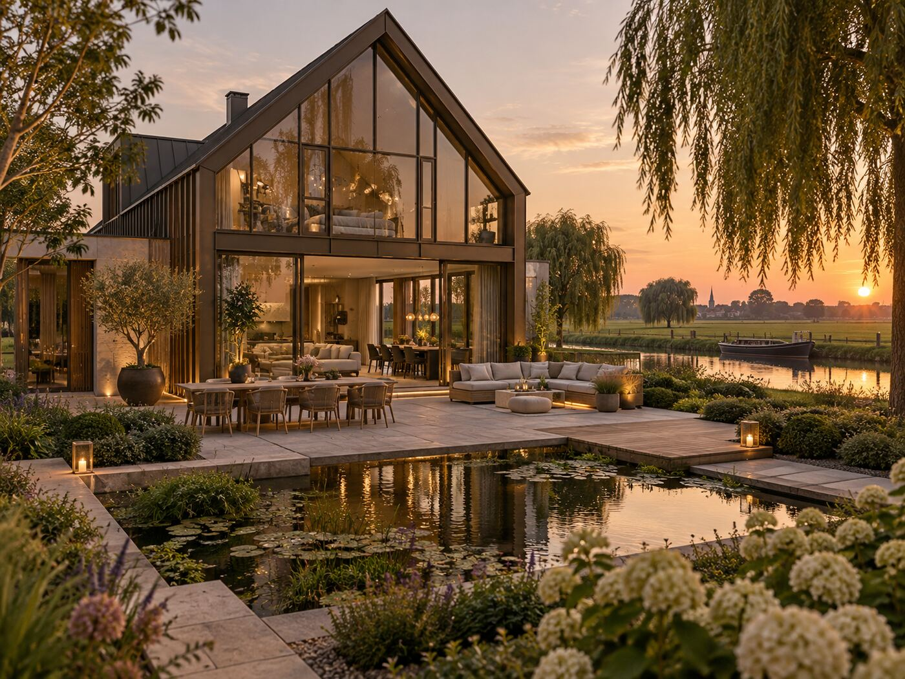
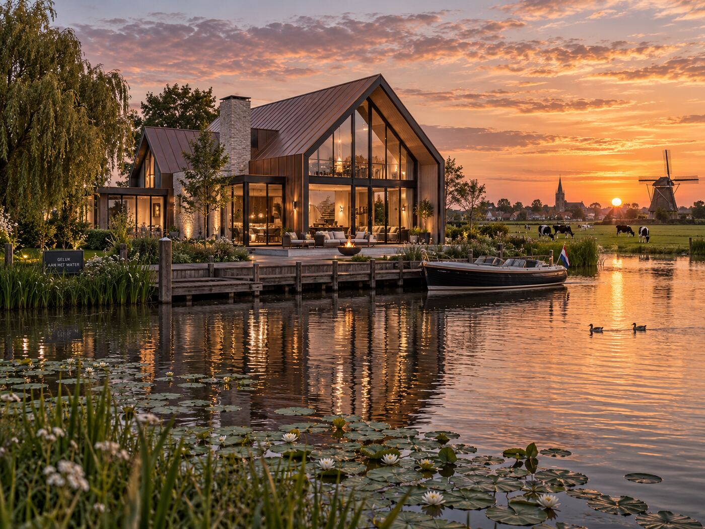
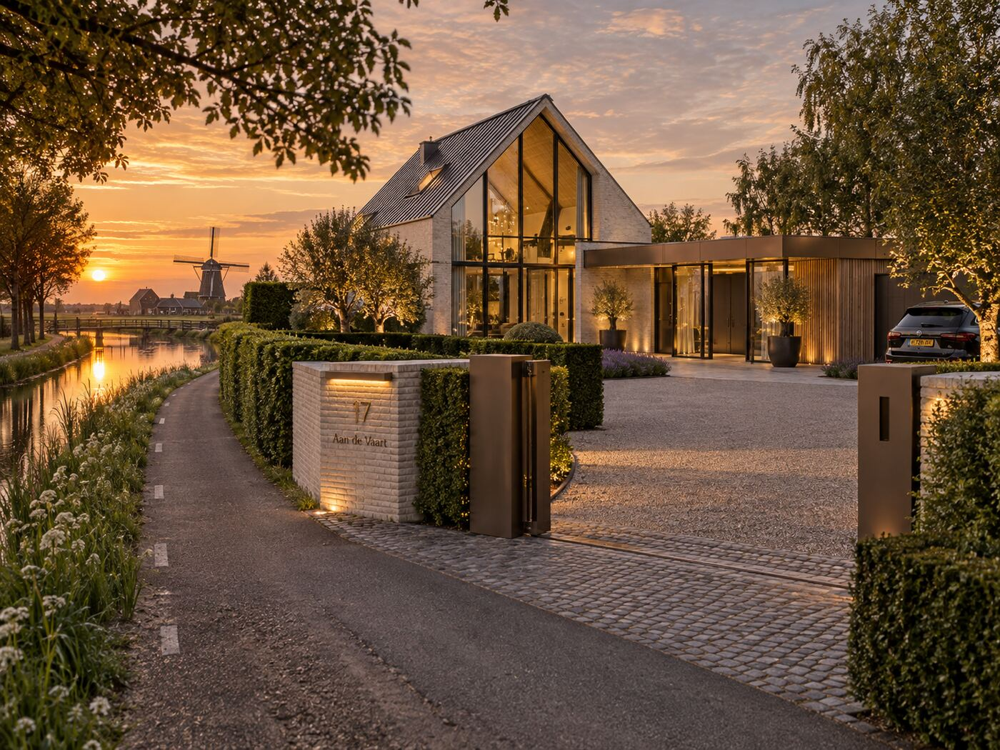
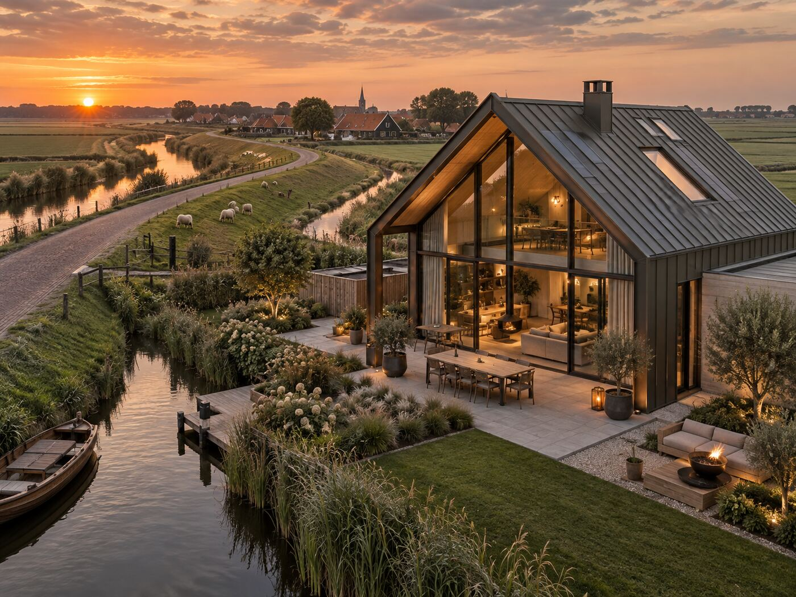
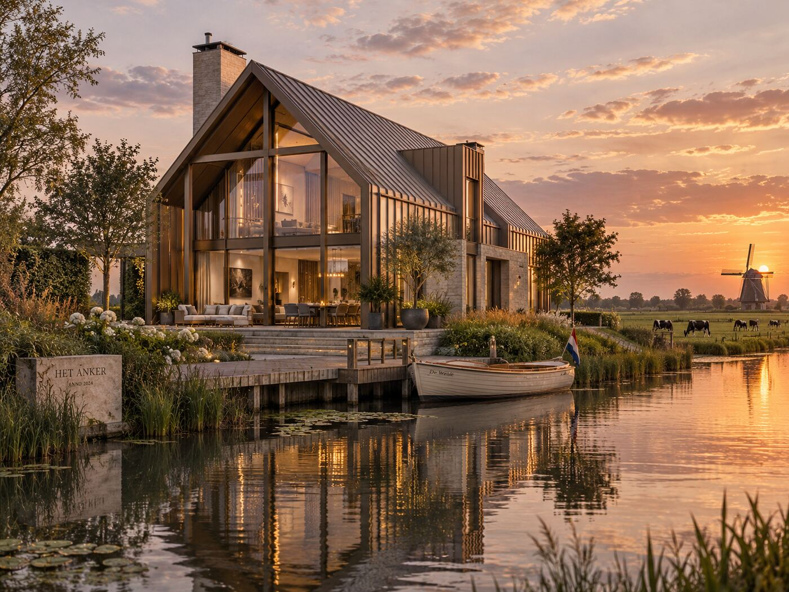
Staal is geen stijlkeuze alleen. Het is een constructief besluit met gevolgen voor ruimte, bouwtijd en levensduur.
Een stalen frame draagt zichzelf. Daardoor zijn vrije overspanningen mogelijk die in traditionele bouw dragende wanden vereisen: open plattegronden, dubbelhoge vides en gevels die vrijwel volledig uit glas bestaan. De indeling blijft bovendien aanpasbaar, ook over twintig jaar.
Het stalen skelet wordt op maat geproduceerd en in dagen gemonteerd, niet in weken gemetseld. Minder weersafhankelijkheid, minder bouwplaatstijd, een strakkere planning. De ruwbouw staat terwijl een traditionele bouw nog in de fundering zit.
Staal verliest bij hergebruik geen kwaliteit. Een stalen frame is demontabel, herbruikbaar en volledig recyclebaar, en past daarmee in een circulaire bouweconomie. Gecombineerd met hoogwaardige isolatie ontstaat een woning die zuinig is in gebruik én in materiaal.
Staal werkt niet zoals hout en scheurt niet zoals metselwerk. Het frame is maatvast en ongevoelig voor vocht, schimmel en ongedierte. Met de juiste conservering en detaillering is een stalen constructie generaties lang onderhoudsarm.
Eén aanspreekpunt, vijf heldere fasen. Je weet op elk moment waar je staat.
We bespreken je wensen, kavel en budget, en toetsen wat er binnen het bestemmingsplan en Bouwbesluit mogelijk is. Eerlijk advies, ook als staal niet de beste keuze is.
Samen met de architect werken we het ontwerp uit in 3D/BIM. Je ziet je woning voordat er één profiel gezaagd is.
Constructieberekeningen, brandwerendheid, isolatie en de volledige vergunningsaanvraag. Wij kennen de eisen en regelen het traject.
Het staalskelet wordt op maat geproduceerd en door ons eigen team gemonteerd. Strak, snel en met de precisie van industriebouw.
Van gevel tot interieur coördineren we de afbouw tot en met de sleuteloverdracht. Eén partij, één verantwoordelijkheid.
Vakwerk zie je aan de handen. Scroll door een dag op de bouwplaats.
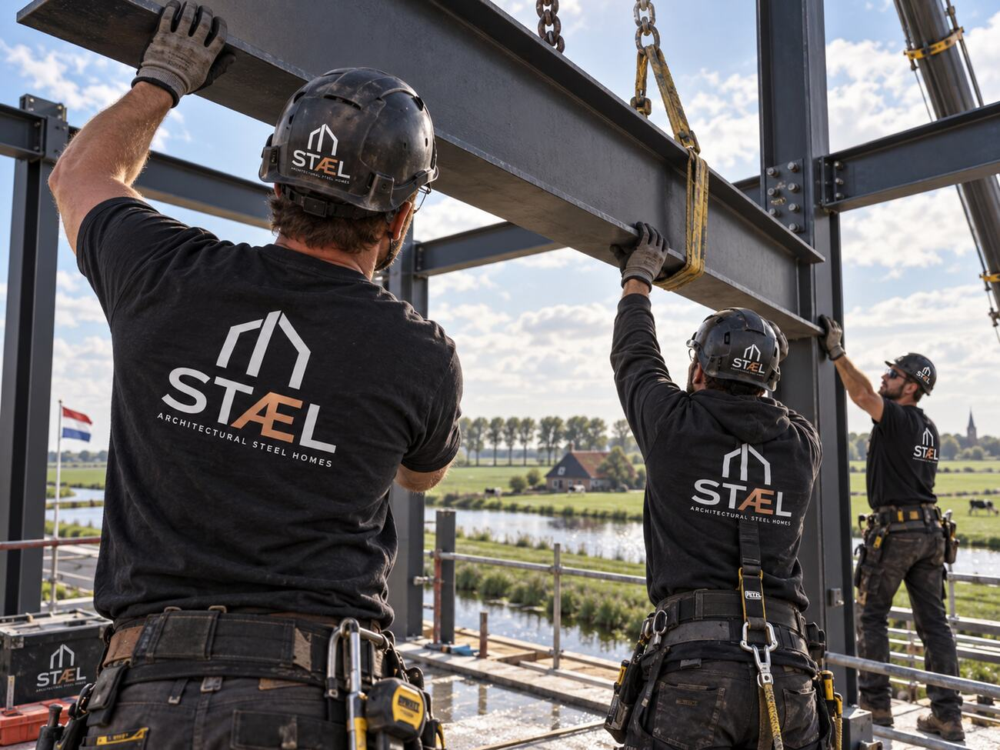
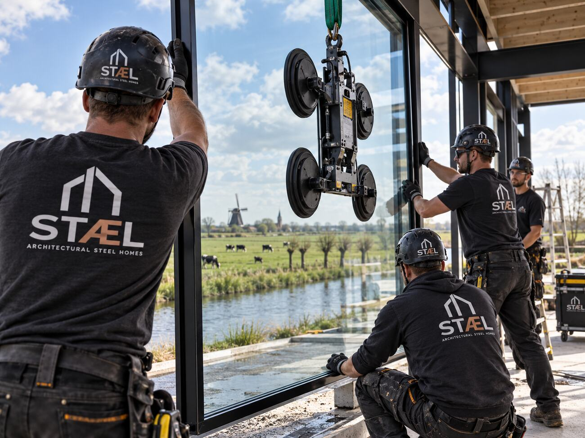
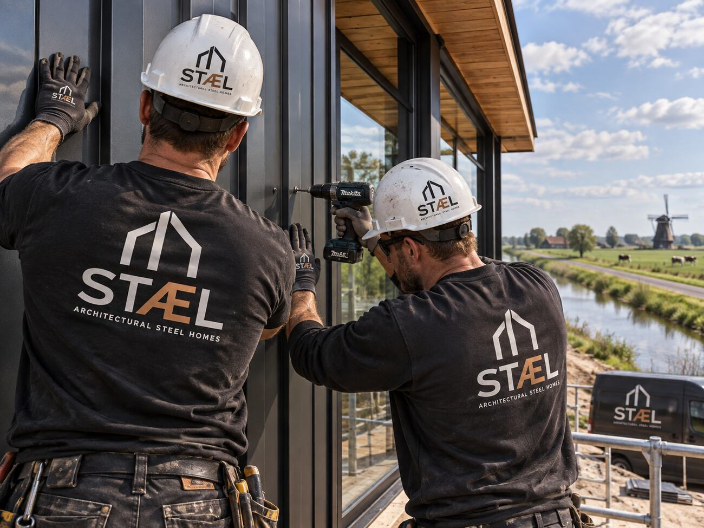
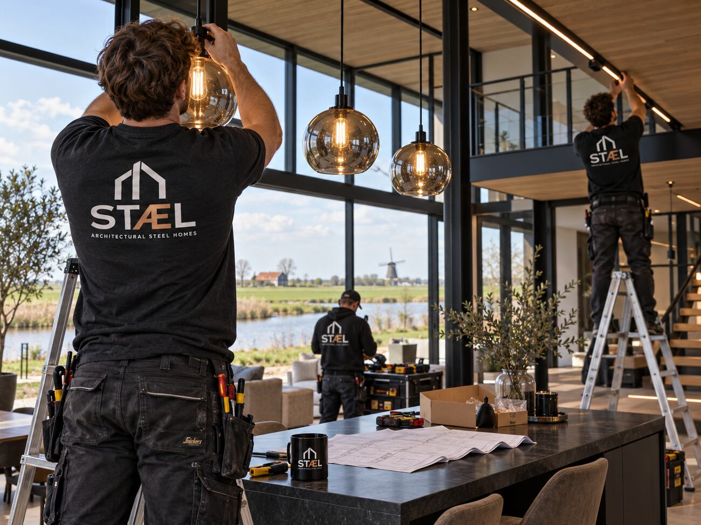
Een woning van staal is geen trend. Het is industrieel erfgoed, vertaald naar hoe we nu willen wonen.STÆL · een samenwerking van EG Assembly en New Way
Per vierkante meter is staalbouw vergelijkbaar met hoogwaardige traditionele bouw. Het verschil zit in wat je ervoor terugkrijgt: grotere overspanningen, meer glas en een kortere bouwtijd. Bij ontwerpen met veel open ruimte is staal vaak juist voordeliger, omdat dure constructieve kunstgrepen vervallen.
Het stalen frame wordt volledig ingepakt in een hoogwaardig geïsoleerde schil, waardoor koudebruggen worden voorkomen en de woning ruimschoots aan de energie-eisen voldoet. Brandwerendheid wordt geborgd volgens de geldende normen (NEN-EN 13501) met brandwerende bekleding of coating, onderdeel van onze engineering en de vergunningsaanvraag.
Reken op enkele maanden voor ontwerp, engineering en vergunning; de doorlooptijd daarvan bepaalt vooral de gemeente. De bouw zelf is door prefab-productie aanzienlijk korter dan traditioneel: het skelet staat in dagen, de complete ruwbouw in weken.
Zeker. We werken graag samen met jouw architect en sluiten aan met onze constructieve engineering en BIM-modellen. Heb je nog geen architect, dan brengen we je in contact met ontwerpers die staalbouw begrijpen.
Een kavel, een schets of alleen nog een idee: we denken graag vrijblijvend mee over wat er in staal mogelijk is.